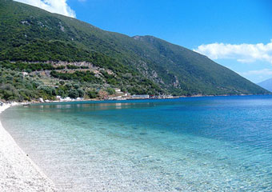

terenceithaque

Marmaka est une plage située au nord d'Ithaque.
Cette plage très idyllique est connue pour ses eaux couleur émeraude et miroitantes, ainsi que pour la nature présente autour.
Vous cherchez le contenu d'une plage en particulier? Cliquez ici pour accéder à l'index des plages.
Vous n'êtes pas sur la page que vous cherchez? Dirigez vous vers l'index.
Pour la suite, c'est par ici
En savoir plus sur Marmaka sur Greeka (site en Anglais).
Vous vous posez des questions sur le contenu des mises à jour du site? Cliquez ici pour voir toutes les infos sur les mises à jour.